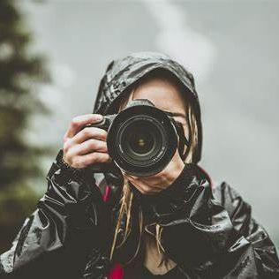
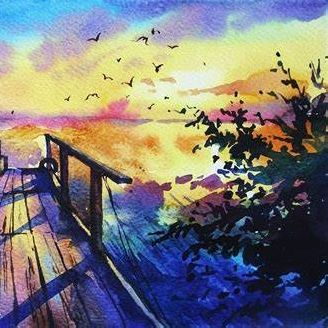
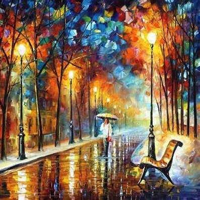
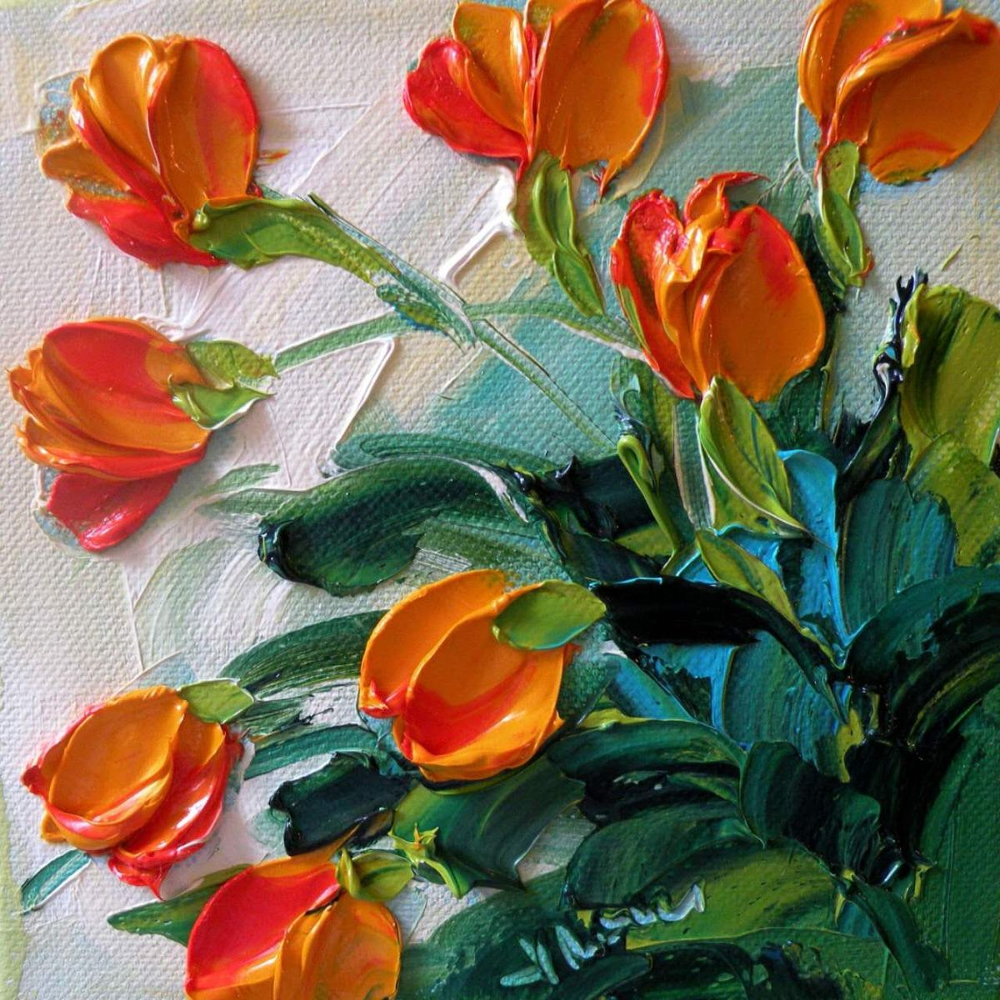
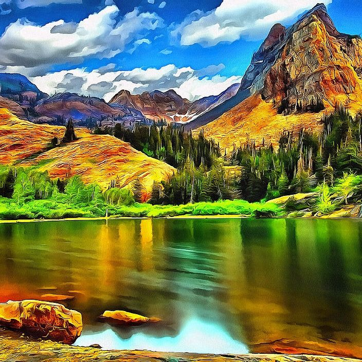
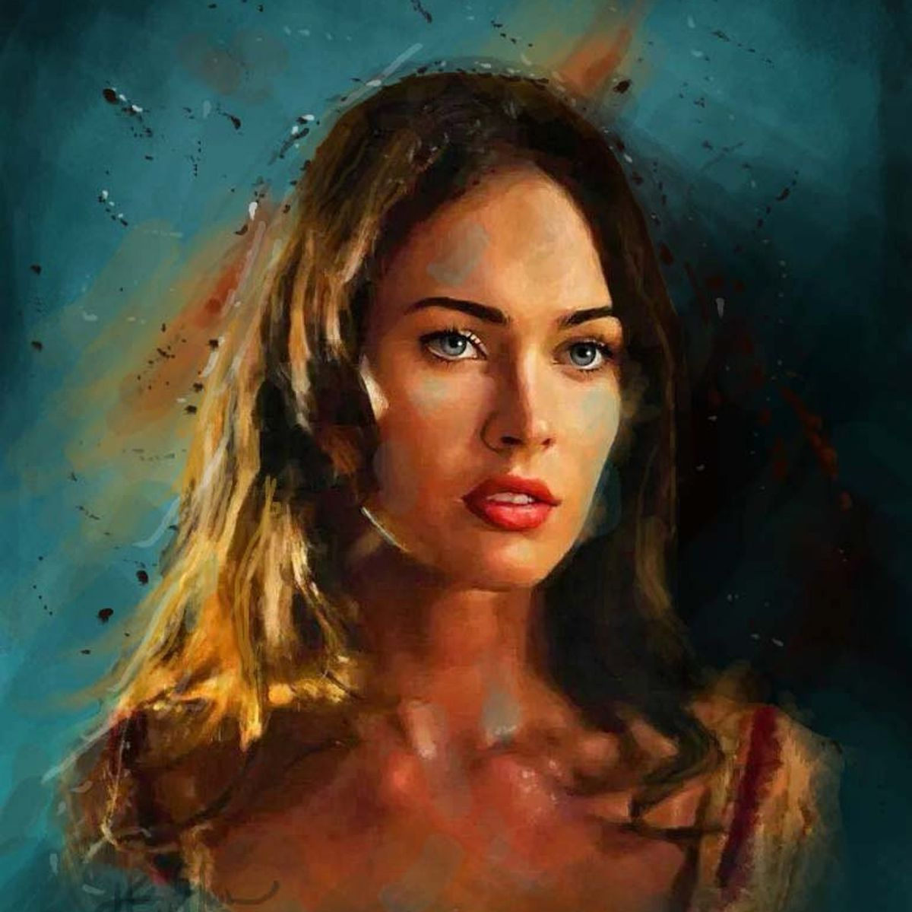
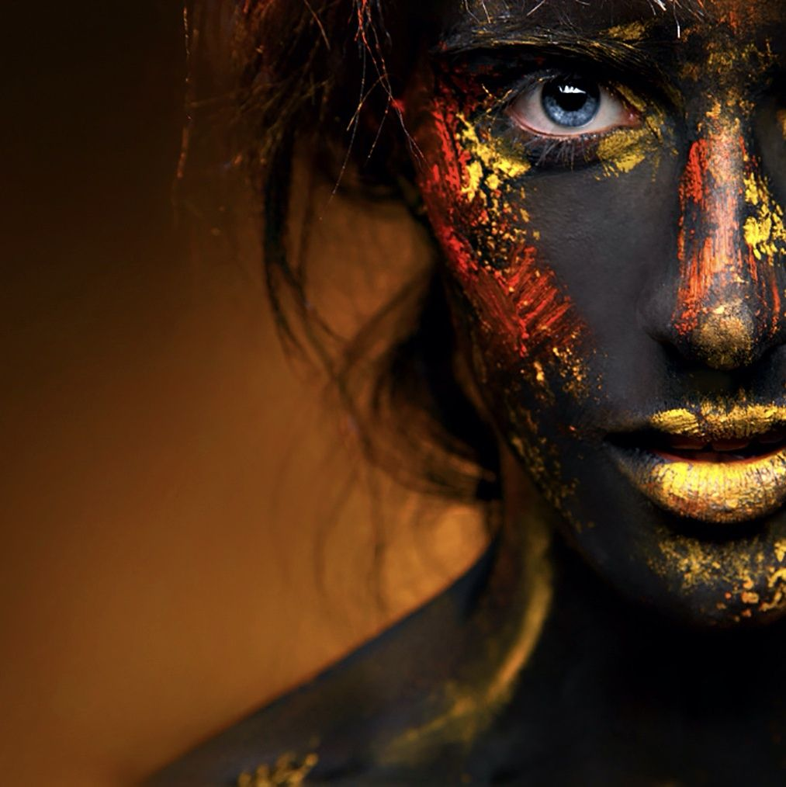
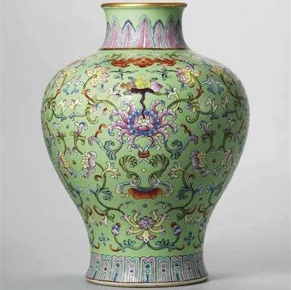
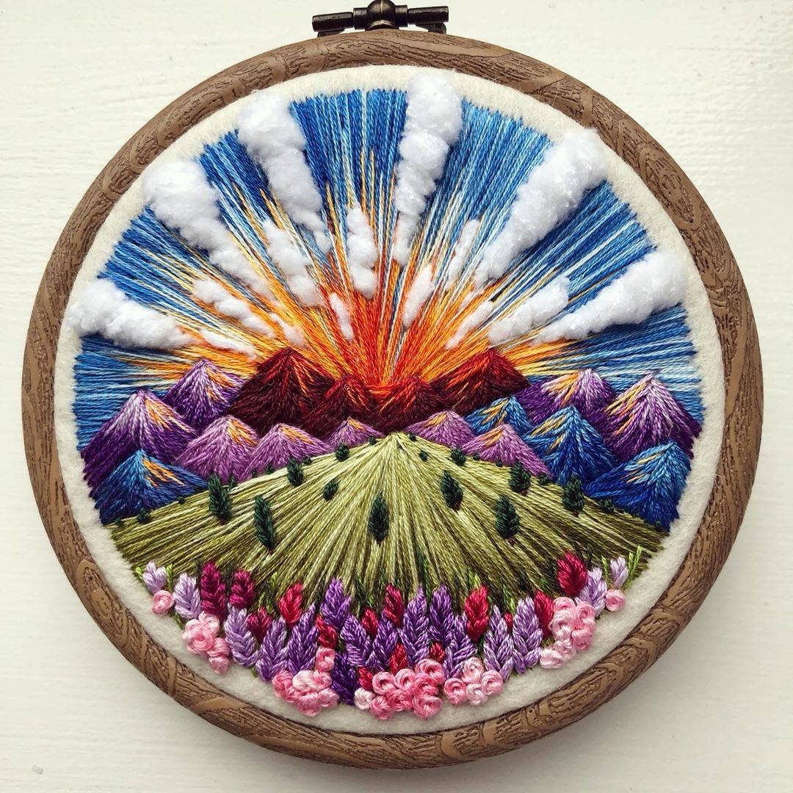
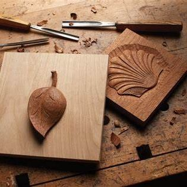

The Art Discovery Club is a vibrant community. Here you can feel the students' passion for all forms of art, from painting and photography to sculpture and crafts.

December Platform will hold the best photography event!! The top three works have the opportunity to cooperate with XXX Photography Museum!! Come sign up!! No restrictions required!!
Please fill out the application form to enjoy exclusive activities and resources.
Email: 1234567890zqz@artclub.com
Phone: 123-456-7890

Watercolour

Oil Painting

Acrylic

Landscape

Portrait

Creative Photography

Pottery

Embroidery

Carving
Watercolour, or watercolor, is a painting technique that uses pigments suspended in a water-based solution. This method is known for its translucency and the ability to create delicate washes of color, making it a popular choice among artists.
Landscape refers to the visible features of an area of land, including its physical elements such as hills, rivers, trees, and buildings, as well as how these elements interact with one another. It encompasses both natural and human-made environments.
Pottery refers to the art and craft of creating objects from clay and other ceramic materials, which are then shaped and fired in a kiln. This ancient practice has been a fundamental part of human culture for thousands of years, resulting in both functional and decorative items.
Oil painting is a technique that involves using pigments suspended in oil, typically linseed oil, to create artwork. This method is known for its rich colors, versatility, and ability to produce a wide range of textures and effects.
A portrait is a representation of a person, typically focusing on the face and upper body. It aims to capture the likeness, personality, and mood of the subject, often conveying deeper insights about their character or identity.
Embroidery is the art of decorating fabric or other materials using a needle and thread (or yarn). This technique enhances the aesthetic appeal of textiles and can be used to create intricate designs, patterns, and images.
Acrylic refers to a type of paint made from pigment suspended in an acrylic polymer emulsion. It is a versatile medium used by artists for a variety of applications, known for its fast-drying properties and vibrant colors.
Creative photography is an artistic approach to capturing images that emphasizes imagination, expression, and innovation. It goes beyond traditional photography techniques to explore unique concepts, styles, and perspectives.
Carving is the art of shaping or cutting materials such as wood, stone, or bone to create three-dimensional forms or intricate designs. This ancient technique has been used for thousands of years in various cultures for both functional and decorative purposes.
Check out our events calendar for monthly art events and workshops.
Date: December 10th
Time: 2 p.m. to 4 p.m
Location: (Invitation link will be sent to your email before the event starts)
Description: Will explain the painting basics suitable for all beginners...
Date: December 15th
Time: 10 a.m. to 12 p.m.
Location: (Invitation link will be sent to your email before the event starts)
Description: This workshop is designed for beginners looking to explore digital art! We’ll cover the basics of Procreate, an easy-to-use app that’s great for creating art on tablets.
Date: December 20th
Time: 3 p.m. to 5 p.m
Location: (Invitation link will be sent to your email before the event starts)
Description: Join us for a session that will teach you how to see the world through a photographer’s eye! In this workshop, you’ll learn tips and tricks for capturing beautiful photographs of ordinary objects and scenes. Suitable for all skill levels, from beginners to advanced photographers.
Tutorials, Software downloads, and Tools. Click on the content you want to learn...
Zero fundamental perspective
Click to go to related webpageMapping the intelligence of artistic work
Click to go to related webpageWest, Anne author.; Weslien, Katarina, "Mapping the intelligence of artistic work : an explorative guide to making, thinking and writing; Second Edition. 2012:
Click to go to related webpagePeter Gray, "The ultimate drawing workbook: Barrington Barber: skills, projects, ideas", 2020:
Click to go to related webpageLee, Jeannie, "Drawing: Learn to Draw Step by Step.", 2020:
Click to go to related webpageThe Art Discovery Club is a vibrant community. Here you can feel the students' passion for all forms of art from painting and photography to sculpture and crafts. We provide a platform for creative expression in workshops, exhibitions and collaborative discussions, providing the most friendly arts environment for all arts children.
Update your personal information to ensure you receive timely notifications from the Club.
Please fill out the application form to enjoy exclusive activities and resources.
Email: 1234567890zqz@artclub.com
Phone: 123-456-7890